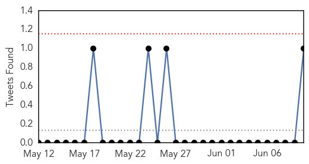
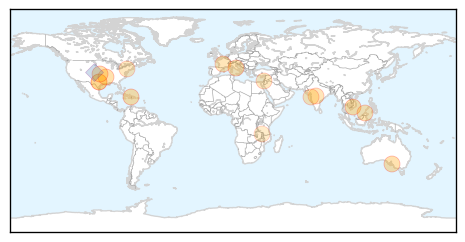

30 Day Trends
Web: 0 alerts, 0 warnings
Twitter: 0 alerts, 0 warnings
Top Articles:
- 0.999
- Ho Chi Minh City assigns three hospitals to treat possible MERS patients
- 0.992
- U-M disease transmission experts prepared to address Michigan's first bird flu cases
- 0.991
- Vaccine Production for 2015-16 Flu Season Underway
- 0.949
- Bird flu outbreak in Iowa causes state of emergency
- 0.942
- Spike in flu cases could see Adelaide patients sent to outer metropolitan hospitals
- 0.885
- Veterinary Services allays fears of farmers
- 0.877
- No restrictions on South Korean tourists, says Nazri - Nation
- 0.821
- KBS World Radio
- 0.814
- United States Pediatric Vaccines Market, Doses, Immunization (Vaccinated), Cases & Forecast
- 0.803
- United States Pediatric Vaccines Market, Doses, Immunization (Vaccinated), Cases & Forecast
- 0.751
- June 9, 2015 Archives
- 0.751
- June 9, 2015 Archives
- 0.751
- June 9, 2015 Archives
- 0.751
- June 9, 2015 Archives
- 0.618
- The unmet need for health care in RumphiThe Nation Online
Top Tweets:
- 0.821
- Me? Influenza.
Web/News Articles

Tweets
Article Locations
Article Confidences